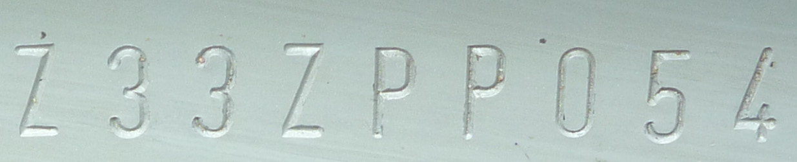
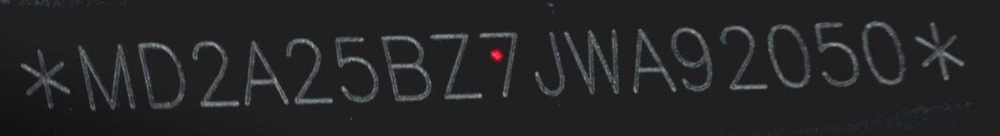

Identificação Veicular
Os processos utilizados pela indústria automobilística para gravação do VIN variam de acordo com a composição e a morfologia do substrato, bem como pelos aspectos técnicos e econômicos do processo na planta de montagem.
Os principais métodos de marcação utilizados atualmente se enquadram em duas categorias, conforme o princípio físico:
"Os métodos de marcação por deformação aplicam a gravação alterando a superfície por impacto ou por compressão. Os processos alteram permanentemente as propriedades físicas do material na área marcada. Já pelos métodos de remoção, o substrato pode ser escavado mecanicamente, como no caso de marcação com o uso de cortadores ou pinos, ou pode ser superficialmente removido, fundido ou queimado, com o uso de laser, por exemplo."

Na estampagem a frio, a ferramenta é pressionada contra o substrato de modo a causar sua intrusão na peça. Aplica-se em processos mecanizados ou manuais.
Todas causam deformação plástica e alteram a estrutura cristalina do material.
| Aspecto | Prensa / Marcação por Rolo | Punção Manual |
|---|---|---|
| Uniformidade geométrica | Alta (controle mecânico) | Variável |
| Alinhamento | Regular | Pequenos desalinhamentos |
| Espaçamento | Consistente | Variações |
| Inclinação | Sem inclinação | Inclinações discretas |
| Causa | Controle mecânico do processo industrial | Aplicação individual dos golpes pelo operador |
Na estampagem por impacto, os caracteres costumam apresentar marcas mais abruptas e leve ressalto. Na estampagem por compressão, o acabamento é mais regular e contínuo.
Também é método de marcação por deformação do material. Uma agulha dura impacta o substrato de forma consecutiva, de modo que as sequências de pontos individuais reproduzam caracteres alfanuméricos.
A agulha pode marcar em superfícies planas, côncavas ou convexas.
Na escrita mecânica, o material é removido com o uso de:
De alta qualidade, com marcas profundas, suaves e contínuas.

Realizada sem contato físico entre a máquina e a peça, por um feixe focalizado que remove o material. O calor fornecido pelo feixe é capaz de fundir o material, bem como alterar a microestrutura subjacente — fenômeno conhecido como zona termicamente afetada.
O laser gera apenas uma zona termicamente afetada muito limitada abaixo da superfície. Isso confere bom aspecto visual, mas:
Constitui uma assinatura técnica própria e distinta das gravações por deformação plástica.
| Técnica | Princípio Físico | Característica do Resultado | Indicadores Periciais |
|---|---|---|---|
| Estampagem (prensa, punção, rolo) | Deformação plástica permanente (impacto ou compressão) | Contornos nítidos, bordas levemente elevadas | Prensa/rolo: uniformidade. Punção manual: desalinhamentos, variações de espaçamento |
| Micropercussão (agulha) | Deformação por impactos consecutivos | Caracteres formados por pontos individuais | Aplicável em superfícies planas, côncavas ou convexas |
| Scribing | Remoção mecânica (fresa, diamante, pino) | Marcas profundas, suaves e contínuas | Alta qualidade visual |
| Laser | Remoção térmica por ablação (sem contato) | Marcação superficial, sem ressalto, alinhamento rigoroso | Pouca zona termicamente afetada → baixa resposta a métodos clássicos de restauração |
Princípio físico: as duas primeiras deformam; as duas últimas removem.